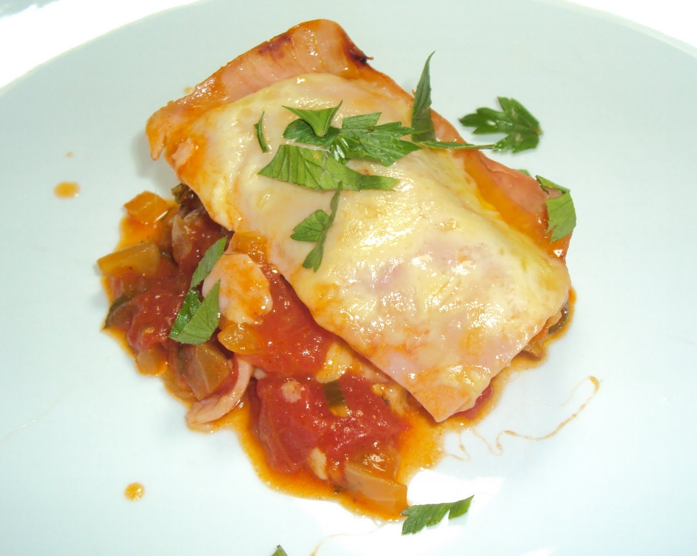

Aves · Frango
Frango Macedo à napolitana

Ingredientes
- 1 frango ensopado, com temperos usuais
- 250 g de talharim
- 1 colher (sopa) de margarina ou manteiga
- 1 pires de queijo ralado
- Farinha de rosca para polvilhar
- 100 g de presunto
- 3 ovos
- Maizena para engrossar o molho (a gosto)
Modo de preparo
- Desosse e corte o frango. Ao molho junte os ossos e 2 xícaras de água; ferva 10 minutos e coe.
- Cozinhe o talharim à parte, escorra, junte manteiga e metade do queijo.
- Unte um pirex com manteiga e polvilhe farinha de rosca. Forre fundo e laterais com fatias de presunto; alterne camadas de talharim, frango e molho até encher.
- Bata as claras em neve; junte as gemas, sal e o restante do queijo. Despeje sobre o macarrão e leve a assar em banho-maria.
- Deixe esfriar um pouco, desenforme e cubra com molho levemente engrossado com maizena.